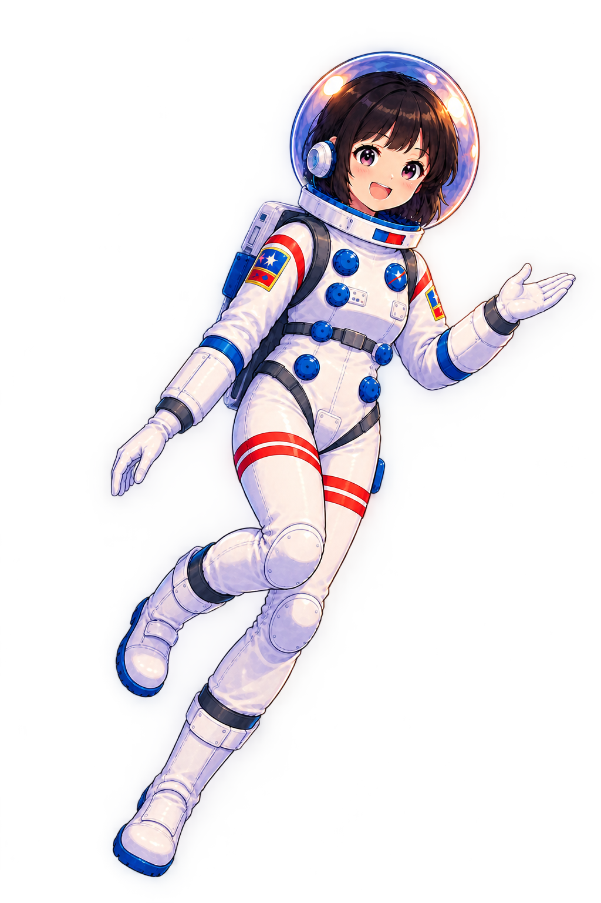

Mars
Explore the red planet and
discover the machines that
still stand beneath its sky.
Pick a world to explore
Explore the red planet and
discover the machines that
still stand beneath its sky.
Travel across the lunar surface
and uncover the machines
left behind.
